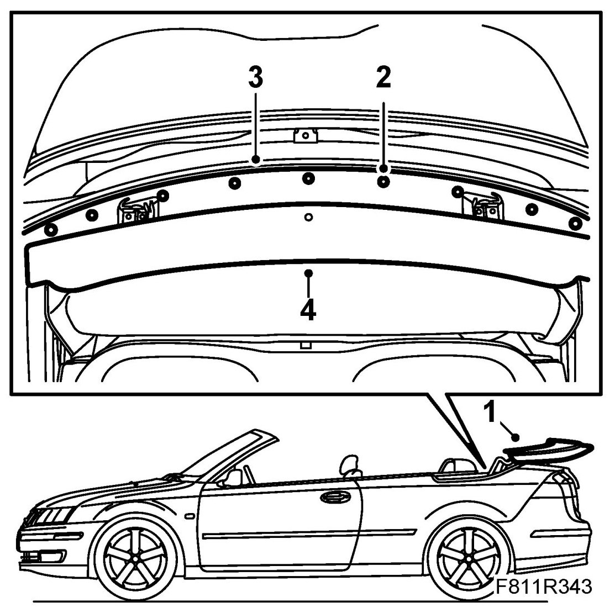
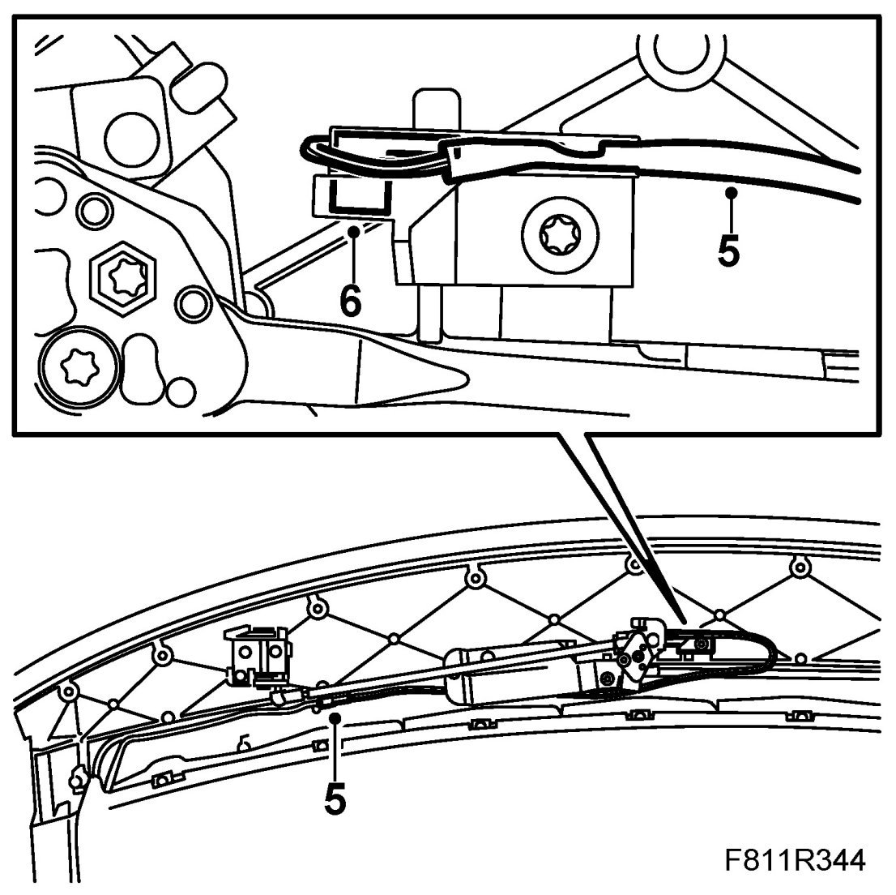
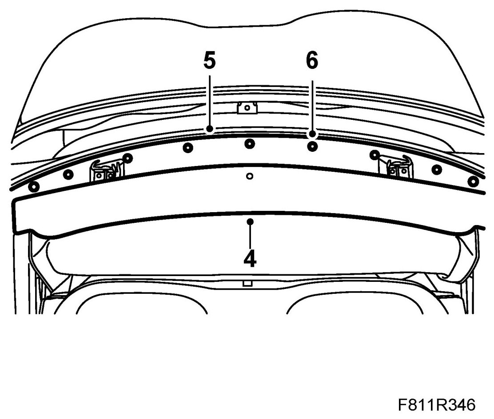

Position Sensor, First Bow Locked (561c)
Position Sensor, First Bow Locked (561C)
To remove
1. Open the soft top and leave the soft top cover up.

2. Remove the cover plate clip.
3. Remove the cover plate.
4. Remove the cover by pulling it backwards.
5. Unplug the position sensor cable. Remove the sensor cable from the clips.
Withdraw the sensor cable from the holder.

6. Remove the position sensor from the holder.
To fit
1. Fit the position sensor.
2. Plug in the position sensor cable. Fit the cable into the clips.
3. Press the position sensor cable into the holder.
Check that the position sensor is correctly adjusted, see Adjustment of position sensor, first bow locked (561c).
4. Fit the cover.

5. Put the cover plate in mounting position.
6. Fit the cover plate clip.
7. Operate the soft top to check the operation of the soft top.
8. Test the operation of the soft top.
9. Connect the diagnostics tool and erase any diagnostic trouble code.